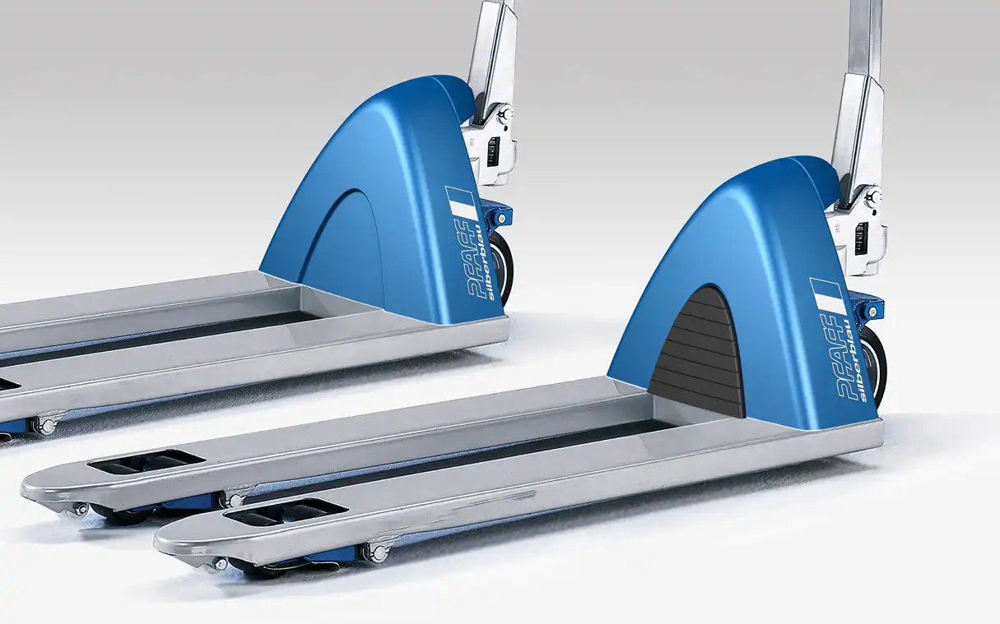

Pfaff-silberblau Silverline
Hand Pallet Truck
Pfaff-silberblau Silverline
Gabelhubwagen
The Pfaff-silberblau hand pallet truck Silverline belongs to the top line products of the conveyors and
offers a maximum load capacity of 2.500 kg at a lift height of 115 mm.
High quantities and an economical manufacturing process allow the production of a deep drawn triangle
frame which offers an increased load capacity on account of the three-dimensional design. At the same time
this takes up the typical design features of the company and stands out from the competition on the market
considerably.
The hand pallet truck has a very good robustness, efficiency and economic efficiency.
So the device achieves an extremely long life time and also makes the transportation of heavy loads a
simple exercise.
Silverline is suitable for the most different fields of application and addresses users particularly who
attach importance to an easy use besides good quality and who save energy and take care of their health.
Der Pfaff-silberblau Gabelhubwagen Silverline zählt zu den Spitzenmodellen der Flurfördergeräte und hat
eine maximale Tragfähigkeit von 2.500 kg bei einer Hubhöhe von 115 mm.
Hohe Stückzahlen und eine kostengünstige Fertigung ermöglichen die Herstellung eines tiefgezogenen
Dreiecksrahmens, der gegenüber bisherigen Blechabkantteilen aufgrund der plastischen Formgebung eine
gesteigerte Belastbarkeit bietet. Zugleich nimmt dieser die firmentypischen Gestaltungsmerkmale auf und
hebt sich am Markt deutlich von der Konkurrenz ab.
Der Hubwagen besitzt eine sehr gute Robustheit, Effizienz und Wirtschaftlichkeit. So erzielt das Gerät
eine extrem lange Lebensdauer und macht auch den Transport schwerer Lasten zu einer einfachen Übung.
Silverline eignet sich für die unterschiedlichsten Einsatzbereiche und adressiert insbesondere Anwender,
die neben guter Qualität auf Leichtgängigkeit Wert legen, um die eigene Kraft und Gesundheit zu schonen.

Images © Selić Industriedesign